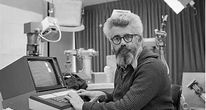

- Década de 1950:
- Década de 1960:
- Década de 1970:
- Década de 1980:
- Década de 1990:
- Década de 2000 en adelante:
Alan Turing propone el "Test de Turing" como criterio para determinar la inteligencia
artificial. También se desarrollan los primeros programas de ajedrez y lógica simbólica. En la Década de 1960
Surge el interés en la IA simbólica y los sistemas expertos.
Luego, en 1970, se investiga en áreas como el procesamiento del lenguaje natural y la visión por computadora.
En 1990 Se popularizó el aprendizaje automático y se exploran nuevas técnicas como las redes neuronales
artificiales. Para finalizar, de 2000 en adelante lod avances fueron significativos en aprendizaje profundo,
procesamiento de lenguaje natural,
visión por computadora y sistemas de IA aplicados en una amplia gama de campos, desde la medicina hasta el
transporte y la industria.
